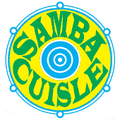
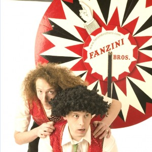

Frame X // Cycle Shorts // Biodiversity Cycle // Bicycle Polo // History Cycle // Food Producers Cycle // Bicycle Hullabaloo // Family Cycle // GPS BeatMap // Meals on Wheels // Bicycle Picnic // DAVID O' DOHERTY and My Lovely Bicycle! // Bicycle Assembly // Treasure Hunt //
Bicycle Hullabaloo
Come and hang out at the Bicycle Festival Hub in the Square in Tralee town. We will have some bicycle doctors at the ready to give your bicycle a little TLC. Make sure you get a bike portrait done in our mobile bicycle studio. There will be bicycle beats from a selection of bike-loving DJs, and Kerry’s finest Samba band – Samba Cúisle. And bicycle artist Paddy Bloomers with his Scary-go-round. We will be assembling at 3 o’clock in the town square for a fun family cycle through Tralee and around its environs. The cycle will be led by a Garda Community Officer. The Family Cycle is an opportunity for both experienced and inexperienced cyclists to take to the saddle and collectively celebrate the simple joy that is a cycle ride.
VENUE: Tralee Town Square
Date: Saturday 15th May
Time: 12pm – 6pm
Samba Cuisle – 2pm
Tralee own Samba collective Samba Cuisle will be bringing their samba reggae rhythms to the square.
Fanzini Brothers – Cycling Clowns -4.30pm
Gather round, gather round to wtiness the jaw-dropping antics of these devilishly handsome Italian Kerrymen. Are they stupid or brave beyond belief? It really doesn’t matter as they present 45mins of fantastic comedy and pure fun in their spoof danger, comedy circus show, Deathwish. The Italian Fanzinis are distinguished by their unusual hairdos, one a monster afro, the other bald as a goose egg.
The language of death-defying stunts and so-what magic is used at every turn, giving a comic edge to all the carry-on. Skill is effortlessly blended with slapstick, with the audience at the heart of the performance. Do not miss these heroes of the Irish circus scene.